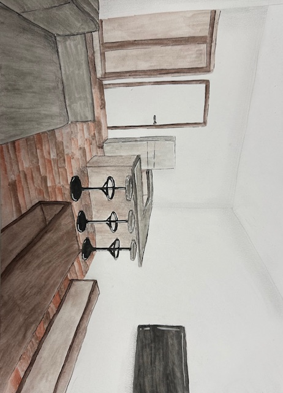
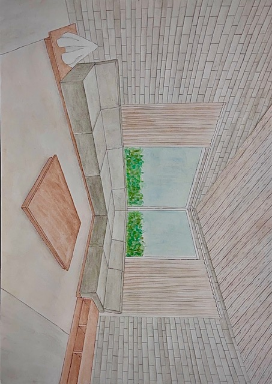

Démarche
Ces dessins à la main constituent une pratique parallèle et complémentaire à la conception assistée par ordinateur. Avant d'ouvrir un logiciel, le crayon permet de capter une première intention, de tester une proportion, de sentir l'espace à l'état brut.
Perspectives intérieures, relevés d'espaces existants, études d'ambiances — chaque feuille raconte une étape de la réflexion. La touche manuelle conserve une chaleur et une spontanéité que le rendu numérique ne peut entièrement restituer.
Ces travaux sont réalisés dans le cadre de la formation à Sophia Ynov Campus et lors d'exercices de relevé d'espaces existants. Ils témoignent d'une attention constante portée aux lignes, aux lumières et aux matières.
Sélection de croquis
 Boutique Ulla — Perspective intérieure
Boutique Ulla — Perspective intérieure

Observation intérieure
Life House